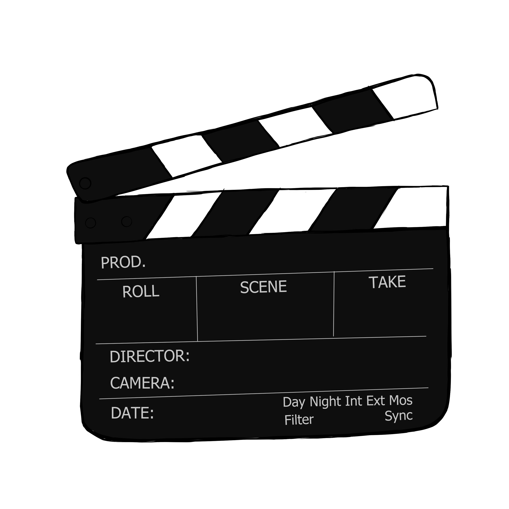
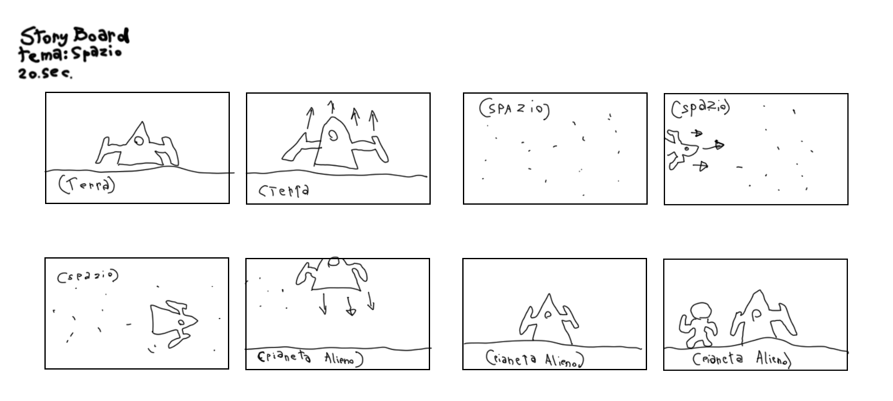
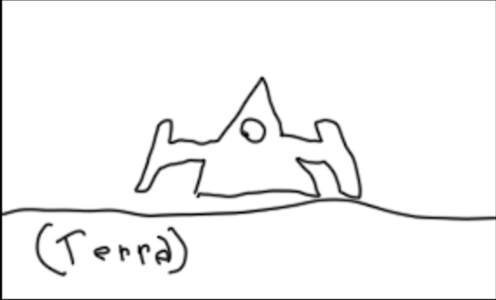
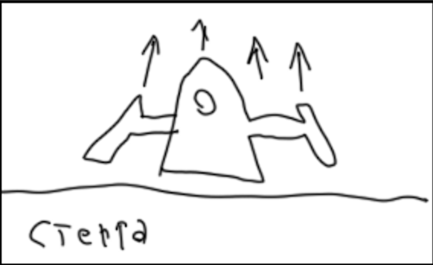
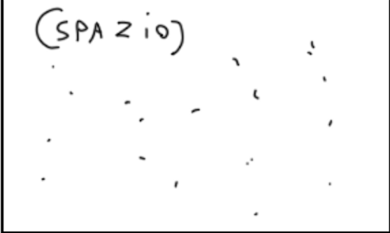
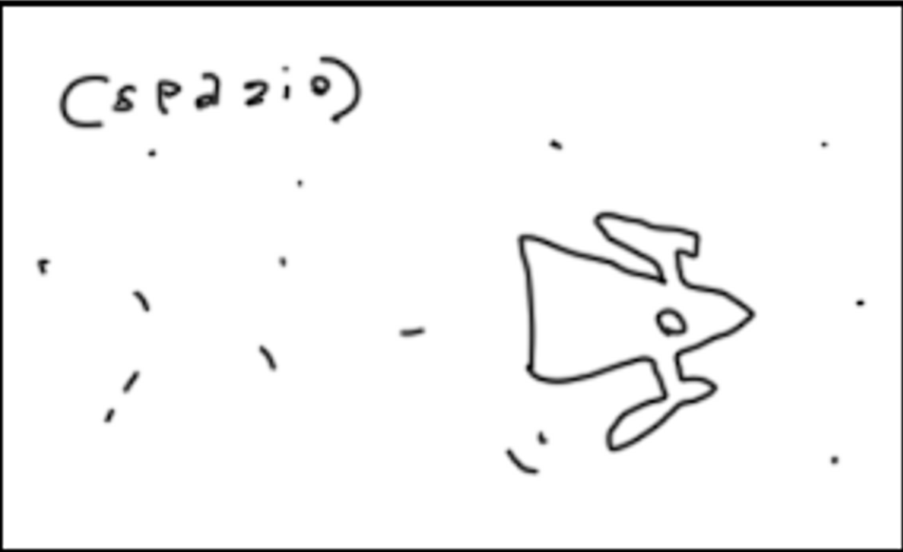
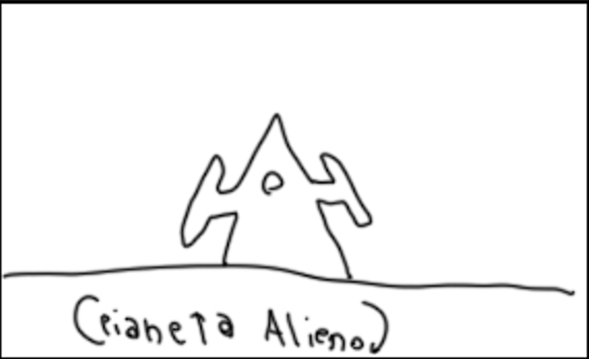
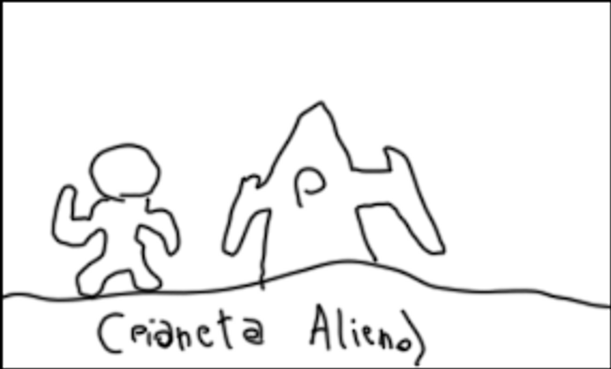

“L'incontro” è un breve storyboard creato per il corso di “animazione digitale”.
Il tema di questo progetto è “spazio” e viene realizzato in tecnica digitale.
Lo storyboard narra di un piccolo astronauta che decide di andare per una piccola avventura tra le stelle, per poi atterrare su un pianeta e esplorarlo. Si tratta di un incontro tra un uomo e la meraviglia dell'ignoto.







Dopo la creazione dello storyboard, si passa alla parte più importante, l'animazione. I frame sono stati creati grazie a Photoshop 2022 e animati con After Effects 2022.
Raccogliendo svariate musiche e SFX, mi sono aiutata con la tecnica dei keyframes sia per la parte audio, che per quella visiva, muovendo testa, occhi e articolazioni dei personaggi senza usare la tecnica frame by frame.